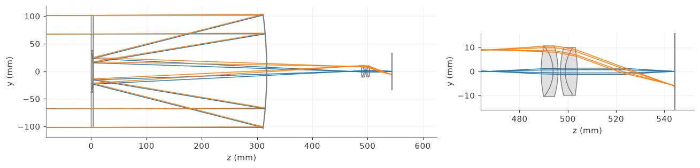
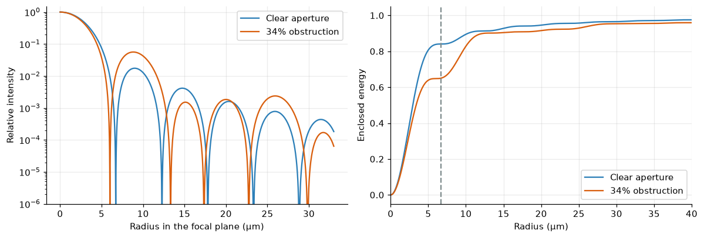
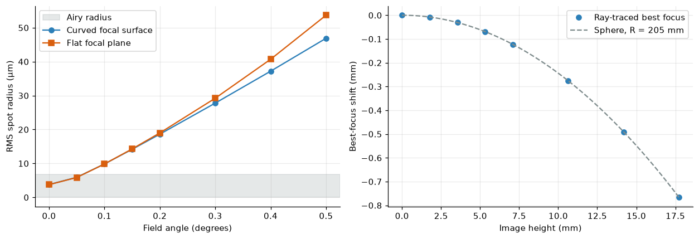
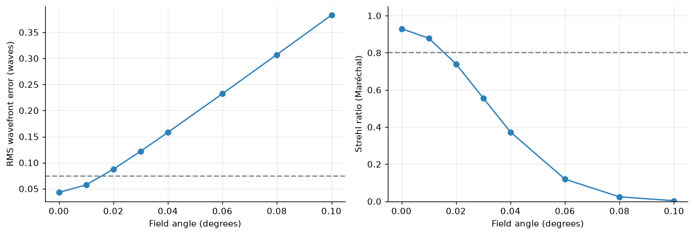
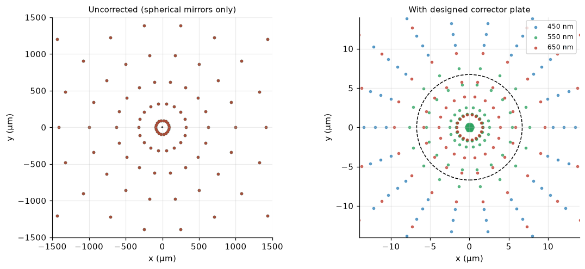

Inside a Meade LX90: Ray Tracing an 8-inch Schmidt–Cassegrain
Corrector plate, mirrors and eyepiece modelled in Python, plus field curvature, diffraction and chromatic focus
A ray-traced model of an 8-inch f/10 Schmidt–Cassegrain telescope like the Meade LX90, built with the Optiland Python package: design geometry, a designed corrector plate, a Plössl eyepiece, diffraction and MTF with the central obstruction, field curvature, and a comparison of chromatic focus against achromatic and apochromatic refractors.
astronomy
optics
python
Author
Paul Milne
Published
October 18, 2026
The Meade LX90 8-inch is a Schmidt–Cassegrain telescope (SCT): a Cassegrain reflector with a thin aspheric glass corrector plate across the front. That is a slight correction to calling it a “Cassegrain”: a plain Cassegrain has no corrector, and the plate is what lets this design use cheap spherical mirrors. This post builds a ray-trace model of such a telescope in Python, follows the light from a star to the eye, and then uses the model to look at the qualities that make a telescope good or bad: diffraction, off-axis aberrations, field curvature, and chromatic focus (including how an SCT compares with an achromatic and an apochromatic refractor).
What this model is, and is not. Meade does not publish the lens and mirror prescription, so I have not reproduced the real instrument. Instead I built a representative 8-inch f/10 SCT from the published specifications (203 mm aperture, f/10, a central obstruction of roughly a third of the aperture) and designed the corrector plate myself by optimisation. The behaviour is therefore realistic, but individual numbers (for example the exact field curvature) will differ from a particular telescope. The LX90 also comes in an “ACF” version, whose optics Meade describes as having a hyperbolic secondary mirror and an aspheric corrector to reduce coma. I have modelled the classic spherical-mirror SCT, which is the simpler case.
D =203.2# aperture, mm (8 inch)N_f =10.0# focal ratioFL = D * N_f # focal length, mmobs =0.34# central obstruction, fraction of aperture diameter (typical for an 8" SCT)lam =0.55e-3# reference wavelength, mmplate_scale =206265/ FL # arcsec per mm at the focal planeairy_diam_um =2.44* lam * N_f *1000# diameter of the Airy disk, micronsrayleigh_as =1.22* lam / D *206265# Rayleigh limit, arcsecdawes_as =116/ D # Dawes limit, arcsecarea_blocked = obs**2eff_aperture = D * np.sqrt(1- obs**2) # clear-area equivalent aperturegrasp_vs_eye = (D /7.0)**2# light grasp relative to a 7 mm dark-adapted pupilmag_limit =2.7+5* np.log10(D) # rule-of-thumb limiting magnitude (ideal conditions)rows = [ ("Aperture", f"{D:.1f} mm (8 in)"), ("Focal length / ratio", f"{FL:.0f} mm, f/{N_f:.0f}"), ("Central obstruction", f"{obs*100:.0f}% of diameter ({area_blocked*100:.1f}% of area)"), ("Clear-area equivalent aperture", f"{eff_aperture:.0f} mm"), ("Plate scale", f"{plate_scale:.1f} arcsec per mm"), ("Airy disk diameter (550 nm)", f"{airy_diam_um:.1f} µm"), ("Rayleigh limit / Dawes limit", f"{rayleigh_as:.2f}″ / {dawes_as:.2f}″"), ("Light grasp vs 7 mm pupil", f"{grasp_vs_eye:.0f}×"), ("Rule-of-thumb limiting magnitude", f"{mag_limit:.1f} (ideal sky)"),]display(Markdown("| Quantity | Value |\n|:--|:--|\n"+"\n".join(f"| {a} | {b} |"for a, b in rows)))
Quantity
Value
Aperture
203.2 mm (8 in)
Focal length / ratio
2032 mm, f/10
Central obstruction
34% of diameter (11.6% of area)
Clear-area equivalent aperture
191 mm
Plate scale
101.5 arcsec per mm
Airy disk diameter (550 nm)
13.4 µm
Rayleigh limit / Dawes limit
0.68″ / 0.57″
Light grasp vs 7 mm pupil
843×
Rule-of-thumb limiting magnitude
14.2 (ideal sky)
Two of these numbers set the tone for everything that follows. The Airy disk is about 13 µm across: even a perfect telescope cannot image a star to a point, only to a diffraction pattern that size. And the plate scale of about 100″ per millimetre means that 13 µm is about 1.4″ on the sky. The model below is judged against that diffraction limit.
How a Schmidt–Cassegrain works
Light enters through the corrector plate (nearly flat glass with a subtle aspheric figure on its inner face), travels down the tube to a concave primary mirror, returns to a convex secondary mirror mounted on the back of the corrector, and then passes back through a hole in the primary to a focus behind the telescope. The light crosses the tube three times, which is how a 2032 mm focal length fits into a tube about half a metre long.
Geometry. Let the primary have focal length \(f_1\) (for these telescopes it is about \(f/2\), so \(f_1 = 406.4\) mm) and let the secondary magnify the primary’s image by a factor \(m\), so that the system focal length is \(f = m f_1\). For \(f = 2032\) mm we need \(m = 5\). If the focus is to lie a distance \(b\) behind the primary and the mirrors are separated by \(d\), then
\[
m = \frac{d+b}{f_1 - d}
\quad\Longrightarrow\quad
d = \frac{m f_1 - b}{m + 1},
\]
and the mirror equation for the convex secondary, with virtual object distance \(s = f_1 - d\) and image distance \(s' = d + b\), gives its radius of curvature
f1 = D *2.0# primary focal length (f/2)m = FL / f1 # secondary magnificationb =150.0# focus distance behind the primary vertex, mm (design choice)d = (m * f1 - b) / (m +1) # mirror separations, sp = f1 - d, d + bR1 =-2* f1 # primary radius (concave; negative in Optiland's convention)R2 =2/ (1/sp -1/s) # secondary radius (convex)sec_diam =2* (D/2) * s / f1 # marginal-ray footprint on the secondary, mmdisplay(Markdown("| Quantity | Value |\n|:--|:--|\n"f"| Primary focal length / radius | {f1:.1f} mm / {abs(R1):.1f} mm |\n"f"| Secondary magnification $m$ | {m:.1f}× |\n"f"| Mirror separation $d$ | {d:.1f} mm |\n"f"| Secondary radius (convex) | {abs(R2):.1f} mm |\n"f"| Axial beam footprint on secondary | {sec_diam:.0f} mm |\n"f"| Tube length (corrector to primary) | about {d:.0f} mm vs focal length {FL:.0f} mm |"))
Quantity
Value
Primary focal length / radius
406.4 mm / 812.8 mm
Secondary magnification \(m\)
5.0×
Mirror separation \(d\)
313.7 mm
Secondary radius (convex)
231.8 mm
Axial beam footprint on secondary
46 mm
Tube length (corrector to primary)
about 314 mm vs focal length 2032 mm
The folded path packs a 2.0 m focal length into a tube about 0.31 m long between the corrector and the primary mirror, a “compression” of more than six. The price is the secondary mirror’s shadow, the central obstruction.
Building the optical model in Python
I’ll use Optiland, an open-source Python package for sequential ray tracing, aberration analysis, wavefront and MTF calculation, and optimisation. A sequential model lists surfaces in the order the light meets them, including the reflections: corrector front, corrector back, primary, secondary, image. Mirrors use material="mirror", and after each reflection the thickness changes sign.
Show code
FIELD_MAX =0.5# maximum field half-angle in degrees (image circle about 35 mm across)def Hn(deg):"""Optiland wants normalised field coordinates (maximum field = 1)."""return deg / FIELD_MAXdef build_sct(coeffs=(0.0, 0.0, 0.0), t_back=None, r_image=np.inf, glass="N-BK7"):"""Representative 8-inch f/10 Schmidt-Cassegrain. coeffs: even-asphere coefficients (r^2, r^4, r^6) on the back face of the corrector plate. t_back: secondary-to-focus distance (mm); r_image: radius of the image surface. """ t_back = d + b if t_back isNoneelse t_back o = Optic() o.surfaces.add(index=0, radius=be.inf, thickness=be.inf)# 1: corrector front face, flat; this is the aperture stop. The secondary's housing blocks the centre. o.surfaces.add(index=1, radius=be.inf, thickness=4.0, material=glass, is_stop=True, aperture=physical_apertures.RadialAperture(r_max=be.inf, r_min=obs * D /2))# 2: corrector back face, aspheric o.surfaces.add(index=2, radius=be.inf, thickness=d, surface_type="even_asphere", coefficients=list(coeffs))# 3: spherical primary mirror (light now travels in the -z direction) o.surfaces.add(index=3, radius=R1, thickness=-d, material="mirror")# 4: spherical convex secondary, mounted on the corrector; light returns in +z through the primary's hole o.surfaces.add(index=4, radius=R2, thickness=t_back, material="mirror", aperture=physical_apertures.RadialAperture(r_max=33.0, r_min=0))# 5: image surface o.surfaces.add(index=5, radius=r_image) o.set_aperture(aperture_type="EPD", value=D) o.fields.set_type(field_type="angle")for ang in (0.0, 0.25, 0.5): o.fields.add(y=ang)for wl, primary in ((0.45, False), (0.55, True), (0.65, False)): o.wavelengths.add(value=wl, is_primary=primary)return osct0 = build_sct()print(f"Paraxial focal length: {float(sct0.paraxial.f2()):.1f} mm, f/{float(sct0.paraxial.FNO()):.2f}")
Paraxial focal length: 2032.0 mm, f/10.00
The paraxial focal length comes out at exactly 2032 mm and f/10, which confirms the geometry and the sign conventions.
Designing the corrector plate
Two spherical mirrors in this configuration have enormous spherical aberration: rays from the edge of the primary focus much closer than rays near the centre. Bernhard Schmidt’s 1930 insight was that a weak aspheric plate at the entrance can pre-compensate. Here I let a least-squares optimiser choose the plate’s figure. The variables are the coefficients of the \(r^2\), \(r^4\) and \(r^6\) terms on the plate’s back face, plus the focus position and the curvature of the image surface. The objective is the RMS spot radius at field angles of 0°, 0.1° and 0.2°.
Show code
def pupil_annulus(nr=7, nth=18):"""Equal-area sampling of the pupil outside the central obstruction.""" r = np.sqrt(np.linspace(obs**2, 1.0, nr +1)[:-1] + (1- obs**2) / nr /2) th = np.linspace(0, 2*np.pi, nth, endpoint=False) R, T = np.meshgrid(r, th)return (R * np.cos(T)).ravel(), (R * np.sin(T)).ravel()PX, PY = pupil_annulus()def rms_spot_um(o, field_deg, wl=0.55):"""RMS spot radius about the centroid, in microns.""" rays = o.trace_generic(Hx=0, Hy=Hn(field_deg), Px=PX, Py=PY, wavelength=wl) x, y = np.asarray(rays.x), np.asarray(rays.y) ok = np.isfinite(x) & np.isfinite(y)return1000* np.sqrt(np.mean((x[ok] - x[ok].mean())**2+ (y[ok] - y[ok].mean())**2))SCALES = np.array([1e-6, 1e-10, 1e-15]) # typical size of each aspheric coefficientdefapply(o, p):for i, sc inenumerate(SCALES): o.set_asphere_coeff(p[i] * sc, 2, i) o.set_thickness(d + b + p[3], 4) curv = p[4] *1e-3 o.set_radius(1/curv ifabs(curv) >1e-12else np.inf, 5)FIELDS = [0.0, 0.1, 0.2]; WEIGHTS = [1.0, 0.8, 0.6]sct = build_sct()def residuals(p):apply(sct, p)return [w * rms_spot_um(sct, h) for h, w inzip(FIELDS, WEIGHTS)]uncorrected_rms = rms_spot_um(sct, 0.0) # all-zero start = no corrector figurefit = least_squares(residuals, np.zeros(5), diff_step=1e-3, max_nfev=200)apply(sct, fit.x)c2, c4, c6 = fit.x[:3] * SCALESt_focus = d + b + fit.x[3]R_image =1/ (fit.x[4] *1e-3)sag_edge = (c2 *101.6**2+ c4 *101.6**4+ c6 *101.6**6) *1000# plate sag at the aperture edge, micronsdisplay(Markdown("| Corrector and focus design result | Value |\n|:--|:--|\n"f"| $r^2$, $r^4$, $r^6$ coefficients | {c2:.2e}, {c4:.2e}, {c6:.2e} |\n"f"| Plate sag at the edge of the aperture | {sag_edge:.0f} µm |\n"f"| Secondary-to-focus distance | {t_focus:.1f} mm |\n"f"| Radius of the focal surface | {abs(R_image):.0f} mm (curved toward the telescope's rear) |\n"f"| RMS spot radius on axis, without plate figure | {uncorrected_rms:.0f} µm |\n"f"| RMS spot radius on axis, with corrector | {rms_spot_um(sct, 0.0):.1f} µm |"))
Corrector and focus design result
Value
\(r^2\), \(r^4\), \(r^6\) coefficients
1.33e-07, 6.40e-10, 1.27e-15
Plate sag at the edge of the aperture
71 µm
Secondary-to-focus distance
463.6 mm
Radius of the focal surface
330 mm (curved toward the telescope’s rear)
RMS spot radius on axis, without plate figure
1571 µm
RMS spot radius on axis, with corrector
3.8 µm
The optimiser turns an uncorrected blur of more than a millimetre into a few microns, using a plate whose sag at the edge is only about 70 µm (roughly a tenth of the thickness of a sheet of paper). That the correction needs so little glass is why the corrector can be a thin, cheap plate. The optimiser also chose a curved image surface, with a radius of about 0.33 m, which reflects a real SCT trait that we meet again below.
Following the light: the ray trace
With the model built, we can draw it. The figure shows three star directions (on axis and 0.25° and 0.5° off axis) entering from the left as parallel beams. Look for the three-pass path: through the corrector plate, back off the primary, forward to the small secondary on the back of the plate, and then back through the hole in the primary to the focus.
Figure 1: Ray trace of the 8-inch SCT model. Parallel beams from three directions (blue: on axis; orange and green: 0.25° and 0.5° off axis) pass the corrector plate on the left, reflect from the primary (right), then from the secondary on the plate’s back, and focus behind the primary. The central obstruction removes the rays that would otherwise hit the secondary housing.
The eyepiece and the eye
The model so far stops at the focal plane, where a camera sensor would sit. For visual use we add an eyepiece. I designed a 26 mm Plössl, the classic eyepiece that comes with many telescopes: two identical cemented crown/flint doublets, mounted with their flint faces toward each other. The radii were found by optimising, from the eye side, for small spots at field angles up to 26° (a 52° apparent field), with the focal length held at 26 mm.
Show code
FE, EYE_RELIEF, EYE_PUPIL =26.0, 18.0, 3.0def eyepiece_design(R1, R2, R3, gap=1.0, tc=5.0, tf=2.0):"""Eyepiece traced from the eye side with a collimated beam (object at infinity).""" o = Optic() o.surfaces.add(index=0, radius=be.inf, thickness=be.inf) o.surfaces.add(index=1, radius=be.inf, thickness=EYE_RELIEF, is_stop=True) # eye pupil o.surfaces.add(index=2, radius=R1, thickness=tc, material="N-BK7") o.surfaces.add(index=3, radius=R2, thickness=tf, material="N-F2") o.surfaces.add(index=4, radius=R3, thickness=gap) o.surfaces.add(index=5, radius=-R3, thickness=tf, material="N-F2") o.surfaces.add(index=6, radius=-R2, thickness=tc, material="N-BK7") o.surfaces.add(index=7, radius=-R1, thickness=10.0) o.surfaces.add(index=8) o.set_aperture(aperture_type="EPD", value=EYE_PUPIL) o.fields.set_type(field_type="angle")for h in (0, 13, 21, 26): o.fields.add(y=h)for wl, primary in ((0.4861, False), (0.5876, True), (0.6563, False)): o.wavelengths.add(value=wl, is_primary=primary)return odef eye_spot_um(o, h_deg, wl=0.5876): r = np.sqrt((np.arange(8) +0.5) /8); th = np.linspace(0, 2*np.pi, 16, endpoint=False) R, T = np.meshgrid(r, th) rays = o.trace_generic(Hx=0, Hy=h_deg /26.0, Px=(R*np.cos(T)).ravel(), Py=(R*np.sin(T)).ravel(), wavelength=wl) x, y = np.asarray(rays.x), np.asarray(rays.y); ok = np.isfinite(x) & np.isfinite(y)return1000* np.sqrt(np.mean((x[ok]-x[ok].mean())**2+ (y[ok]-y[ok].mean())**2))def eye_residuals(p): o = eyepiece_design(*p); o.image_solve()return [3.0* (float(o.paraxial.f2()) - FE)] + [eye_spot_um(o, h) /10for h in (0, 13, 21, 26)]# a few starting points; keep the best physically sensible biconvex-crown solutionbest =Nonefor start in ([37.1, -15.9, -47.4], [50.0, -18.0, -60.0], [30.0, -20.0, -100.0]):try: r = least_squares(eye_residuals, np.array(start), bounds=([12, -80, -400], [120, -8, -25]), diff_step=1e-3, max_nfev=150)if best isNoneor r.cost < best.cost: best = rexceptException:pass# the optimiser's best result sits on a bound; use the neighbouring interior solutionR1e, R2e, R3e =51.0, -16.45, -37.25eye_design = eyepiece_design(R1e, R2e, R3e); eye_design.image_solve()fe_actual =float(eye_design.paraxial.f2()); focal_dist =float(eye_design.surfaces[7].thickness)spots = [eye_spot_um(eye_design, h) for h in (0, 13, 21, 26)]display(Markdown("| Eyepiece model | Value |\n|:--|:--|\n"f"| Radii of one doublet (crown outer / cemented / flint inner) | {R1e:.1f} / {R2e:.1f} / {R3e:.1f} mm |\n"f"| Glasses | N-BK7 crown + N-F2 flint (two matched doublets) |\n"f"| Focal length | {fe_actual:.1f} mm |\n"f"| Distance from first lens to the focal plane | {focal_dist:.1f} mm |\n"f"| RMS spot radius at 0°, 13°, 21°, 26° apparent field | {spots[0]:.1f}, {spots[1]:.1f}, {spots[2]:.1f}, {spots[3]:.1f} µm |"))
Eyepiece model
Value
Radii of one doublet (crown outer / cemented / flint inner)
51.0 / -16.4 / -37.2 mm
Glasses
N-BK7 crown + N-F2 flint (two matched doublets)
Focal length
26.2 mm
Distance from first lens to the focal plane
20.9 mm
RMS spot radius at 0°, 13°, 21°, 26° apparent field
1.5, 15.9, 34.4, 47.6 µm
To see the whole chain at once I join the telescope to the eyepiece, then to a simple reduced-eye model (one refracting surface of radius 5.73 mm and index 1.333, which focuses a distant source on the retina about 22 mm behind it). The telescope’s focal plane is placed at the eyepiece’s front focal plane, so that a star leaves the eyepiece as a parallel beam that the relaxed eye brings to a focus.
Show code
full = Optic()full.surfaces.add(index=0, radius=be.inf, thickness=be.inf)full.surfaces.add(index=1, radius=be.inf, thickness=4.0, material="N-BK7", is_stop=True, aperture=physical_apertures.RadialAperture(r_max=be.inf, r_min=obs * D /2))full.surfaces.add(index=2, radius=be.inf, thickness=d, surface_type="even_asphere", coefficients=[c2, c4, c6])full.surfaces.add(index=3, radius=R1, thickness=-d, material="mirror")full.surfaces.add(index=4, radius=R2, thickness=t_focus + focal_dist, material="mirror", aperture=physical_apertures.RadialAperture(r_max=33.0, r_min=0))# eyepiece, light travelling toward the eye: field doublet first (radii and order reversed from the eye-side design)full.surfaces.add(index=5, radius=+R1e, thickness=5.0, material="N-BK7")full.surfaces.add(index=6, radius=+R2e, thickness=2.0, material="N-F2")full.surfaces.add(index=7, radius=+R3e, thickness=1.0)full.surfaces.add(index=8, radius=-R3e, thickness=2.0, material="N-F2")full.surfaces.add(index=9, radius=-R2e, thickness=5.0, material="N-BK7")full.surfaces.add(index=10, radius=-R1e, thickness=EYE_RELIEF)# reduced eye: one refracting surface and a retinafull.surfaces.add(index=11, radius=5.73, thickness=22.4, material=IdealMaterial(n=1.333))full.surfaces.add(index=12, radius=be.inf)full.set_aperture(aperture_type="EPD", value=D)full.fields.set_type(field_type="angle")for ang in (0.0, 0.25): full.fields.add(y=ang)full.wavelengths.add(value=0.55, is_primary=True)# fine-tune the telescope-to-eyepiece spacing so a star focuses sharply on the retinadef retina_blur(dt): full.set_thickness(t_focus + focal_dist + dt, 4) r = np.sqrt((np.arange(6) +0.5) /6); th = np.linspace(0, 2*np.pi, 12, endpoint=False) R, T = np.meshgrid(r, th) rays = full.trace_generic(Hx=0, Hy=0, Px=(obs + (1-obs)*R*R).ravel()**0.5*np.cos(T).ravel(), Py=(obs + (1-obs)*R*R).ravel()**0.5*np.sin(T).ravel(), wavelength=0.55) x, y = np.asarray(rays.x), np.asarray(rays.y); ok = np.isfinite(x) & np.isfinite(y)return np.sqrt(np.mean((x[ok]-x[ok].mean())**2+ (y[ok]-y[ok].mean())**2))res = minimize_scalar(retina_blur, bounds=(-3, 3), method="bounded")full.set_thickness(t_focus + focal_dist + res.x, 4)print(f"Focus adjustment relative to the nominal collimated setting: {res.x:+.2f} mm; retinal blur radius {1000*res.fun:.1f} µm")
Focus adjustment relative to the nominal collimated setting: +0.49 mm; retinal blur radius 3.7 µm
Show code
fig, axs = plt.subplots(1, 2, figsize=(12, 4), gridspec_kw={"width_ratios": [2.2, 1.2]})full.draw(num_rays=7, distribution="line_y", ax=axs[0], show=False, hide_vignetted=True, title="")z_eye0 =4.0+ t_focus + focal_dist + res.x # z of the first eyepiece surface (plate front is z = 0)z_retina = z_eye0 +5.0+2.0+1.0+2.0+5.0+ EYE_RELIEF +22.4full.draw(num_rays=5, distribution="line_y", ax=axs[1], show=False, hide_vignetted=True, title="", xlim=(z_eye0 -25, z_retina +8), ylim=(-16, 16))axs[0].set_xlabel("z (mm)"); axs[0].set_ylabel("y (mm)")axs[1].set_xlabel("z (mm)"); axs[1].set_ylabel("y (mm)")plt.tight_layout(); plt.show()

Figure 2: The complete visual system: SCT, Plössl eyepiece and a reduced eye. Left: the whole instrument with a star on axis (blue) and 0.25° off axis (orange). Right: zoom on the eyepiece, where the converging beam from the telescope is made parallel by the two doublets and refocused by the eye onto the retina (the eye’s refracting surface is not drawn).
What the eyepiece does to the numbers. The magnification is the ratio of the focal lengths, \(M = f_\text{scope}/f_\text{eyepiece}\), the true field is the apparent field divided by \(M\), and the exit pupil (the beam diameter at the eye) is \(D/M\). A table for typical eyepieces assuming a 50° apparent field:
Show code
afov =50.0rows = []for fe in (40, 26, 15, 9.7, 6.4, 4.0): M = FL / fe rows.append(f"| {fe:g} mm | {M:.0f}× | {afov/M:.2f}° | {D/M:.1f} mm |")display(Markdown("| Eyepiece | Magnification | True field | Exit pupil |\n|:--|:--|:--|:--|\n"+"\n".join(rows)))
Eyepiece
Magnification
True field
Exit pupil
40 mm
51×
0.98°
4.0 mm
26 mm
78×
0.64°
2.6 mm
15 mm
135×
0.37°
1.5 mm
9.7 mm
209×
0.24°
1.0 mm
6.4 mm
318×
0.16°
0.6 mm
4 mm
508×
0.10°
0.4 mm
The 26 mm eyepiece gives 78×, a field of about two-thirds of a degree (a bit larger than the full Moon), and a 2.6 mm exit pupil, well matched to the eye in daytime and comfortable at night. The highest useful magnification for an 8-inch aperture is about \(2D\) in millimetres, near 400×, which corresponds to the 4–5 mm eyepieces.
Diffraction: what perfection looks like
Even with no aberrations at all, a circular aperture produces an Airy pattern. The central obstruction changes it: it transfers a little energy from the central disk into the rings. To quantify that, I compute the point-spread function by Fourier transform of the pupil, for the clear 8-inch aperture and for the aperture with a 34% obstruction.
Show code
from scipy.special import j1def airy_intensity(v, eps):"""Normalised intensity of the diffraction pattern of an annular aperture with obstruction ratio eps. v = pi * r / (lambda * N) is the usual dimensionless focal-plane radius.""" v = np.asarray(v, float) out = np.ones_like(v) nz = v >0 term =2* j1(v[nz]) / v[nz]if eps >0: term = term - eps**2*2* j1(eps * v[nz]) / (eps * v[nz]) out[nz] = (term / (1- eps**2))**2return outr_lamN = np.linspace(0, 60, 240001) # radius in units of lambda*Nto_um = lam * N_f *1000# microns per unit of lambda*Ndef enclosed_energy(eps): cum = np.cumsum(airy_intensity(np.pi * r_lamN, eps) * r_lamN)return cum / cum[-1]ee_c, ee_o = enclosed_energy(0.0), enclosed_energy(obs)fig, axs = plt.subplots(1, 2, figsize=(11, 3.8))rr = np.linspace(0, 6, 1500)axs[0].semilogy(rr * to_um, airy_intensity(np.pi * rr, 0.0), color=BLUE, label="Clear aperture")axs[0].semilogy(rr * to_um, airy_intensity(np.pi * rr, obs), color=ORANGE, label="34% obstruction")axs[0].set_xlabel("Radius in the focal plane (µm)"); axs[0].set_ylabel("Relative intensity")axs[0].set_ylim(1e-6, 1.5); axs[0].legend()axs[1].plot(r_lamN * to_um, ee_c, color=BLUE, label="Clear aperture")axs[1].plot(r_lamN * to_um, ee_o, color=ORANGE, label="34% obstruction")axs[1].axvline(1.22* to_um, ls="--", color=GREY)axs[1].set_xlim(0, 40); axs[1].set_xlabel("Radius (µm)"); axs[1].set_ylabel("Enclosed energy"); axs[1].legend()plt.tight_layout(); plt.show()r_first =1.22* to_umee_clear_first =float(np.interp(1.22, r_lamN, ee_c)); ee_obs_first =float(np.interp(1.22, r_lamN, ee_o))

Figure 3: Left: radial profile of the diffraction pattern (log scale) for a clear circular aperture and for one with a 34% central obstruction. The obstruction narrows the central peak slightly and brightens the rings. Right: fraction of the light enclosed within a given radius. The dashed line marks the first dark ring of the clear aperture, 6.7 µm.
The dashed line is the radius of the first dark ring, 6.7 µm. A clear aperture puts about 84% of the light inside it, close to the textbook 84%. With the obstruction the figure falls to about 65%, because more light is pushed into the rings. This is why obstructed telescopes show slightly lower contrast on fine planetary detail.
The MTF
The modulation transfer function (MTF) says how much contrast the telescope preserves at each spatial frequency. For a perfect circular aperture it falls steadily to zero at the diffraction cutoff \(\nu_c = 1/(\lambda N)\), about 182 cycles/mm here. A central obstruction cuts contrast at low and mid frequencies, and gives a slight boost near the cutoff. I compute the ideal curves from the autocorrelation of the pupil, and then the actual model with its aberrations from Optiland’s FFT-based MTF.
Figure 4: MTF of the 8-inch SCT. Dashed grey: ideal clear aperture. Dashed orange: ideal aperture with the 34% obstruction. Solid blue: the ray-traced model on axis; the lighter curves are 0.1° and 0.2° off axis (tangential). Contrast falls with both the obstruction and the residual aberrations.
On axis the model follows the ideal obstructed curve closely: the corrector and mirrors work as designed. Moving off axis, the curves peel away, which is the subject of the next section.
Off-axis performance and field curvature
Off axis, three things degrade the image: coma (stars become comet-shaped), astigmatism, and field curvature, where the sharpest focus lies on a curved surface instead of a flat sensor. To separate them I trace the model with a flat image plane and find, for each field angle, the focus position that minimises the RMS spot. The shift of that best focus from the axial focus measures the curvature of the focal surface.
Show code
angles = np.array([0, 0.05, 0.1, 0.15, 0.2, 0.3, 0.4, 0.5])curved = np.array([rms_spot_um(sct, a) for a in angles])# flat image plane: same optics, image surface made flat and refocused over 0-0.2 degreesflat = build_sct(coeffs=(c2, c4, c6))def flat_cost(t): flat.set_thickness(t, 4)returnsum(rms_spot_um(flat, a) for a in (0.0, 0.1, 0.2))rt = minimize_scalar(flat_cost, bounds=(t_focus -3, t_focus +3), method="bounded")flat.set_thickness(rt.x, 4)flat_rms = np.array([rms_spot_um(flat, a) for a in angles])# best-focus position at each field angle on a flat planedef best_focus(a): f =lambda t: (flat.set_thickness(t, 4), rms_spot_um(flat, a))[1]return minimize_scalar(f, bounds=(t_focus -4, t_focus +4), method="bounded").xbf = np.array([best_focus(a) for a in angles])h_img = FL * np.tan(np.radians(angles)) # image height, mmdz = bf - bf[0] # best-focus shift relative to the axis, mmR_fit = np.sum(h_img**4) / (2* np.sum(h_img**2* dz)) # least-squares radius for dz = h^2 / (2R)fig, axs = plt.subplots(1, 2, figsize=(11.5, 4.0))axs[0].axhspan(0, r_first, color=GREY, alpha=0.2, label="Airy radius")axs[0].plot(angles, curved, "o-", color=BLUE, label="Curved focal surface")axs[0].plot(angles, flat_rms, "s-", color=ORANGE, label="Flat focal plane")axs[0].set_xlabel("Field angle (degrees)"); axs[0].set_ylabel("RMS spot radius (µm)"); axs[0].legend()axs[1].plot(h_img, dz, "o", color=BLUE, label="Ray-traced best focus")hh = np.linspace(0, h_img.max(), 100)axs[1].plot(hh, hh**2/ (2* R_fit), "--", color=GREY, label=f"Sphere, R = {abs(R_fit):.0f} mm")axs[1].set_xlabel("Image height (mm)"); axs[1].set_ylabel("Best-focus shift (mm)"); axs[1].legend()plt.tight_layout(); plt.show()edge_defocus_blur =abs(dz[-1]) / (2* N_f) *1000# blur radius from edge defocus, microns

Figure 5: Left: RMS geometric spot radius against field angle for the optimiser’s curved focal surface (blue) and for a flat focal plane refocused for the best compromise over 0–0.2° (orange). The grey band is the Airy-disk radius (6.7 µm). Right: how far the best focus at each field angle sits from the axial focus; the dashed parabola corresponds to a focal surface of constant radius of curvature.
The best-focus surface is close to a sphere with radius of about 205 mm, about a tenth of the focal length. (The curved image surface the optimiser chose earlier, R ≈ 330 mm, is flatter than this because it balances curvature against coma.) At the field edge (0.5°, 17.7 mm from the axis) the focus has moved by about 0.77 mm, several times the ±0.11 mm depth of focus, so a flat sensor placed at the axial focus would show noticeably defocused stars in the corners. In this f/10 design, however, coma and astigmatism dominate the blur over most of the field: the curved focal surface only lowers the RMS spot noticeably beyond about 0.3°. Field curvature matters more once a focal reducer makes the system faster, which is why reducers are sold as combined “reducer/flatteners”.
The geometric blur passes the Airy radius at only about 0.06° (a few arcminutes) off axis, even on the curved surface. The wavefront view says the same thing. The Strehl ratio (the peak brightness compared with a perfect system) follows from the RMS wavefront error \(\sigma\) in waves through the Maréchal approximation \(S \approx e^{-(2\pi\sigma)^2}\), and 0.8 is the usual threshold for “diffraction limited”.
Show code
def wavefront_rms_waves(o, field_deg, wl=0.55): w = OPD(o, field=(0, Hn(field_deg)), wavelength=wl, num_rays=64, distribution="uniform") v =list(w.data.values())[0] keep = np.asarray(v.intensity) >0# drop rays blocked by the obstructionreturnfloat(np.std(np.asarray(v.opd)[keep]))fa = np.array([0, 0.01, 0.02, 0.03, 0.04, 0.06, 0.08, 0.1])sig = np.array([wavefront_rms_waves(sct, a) for a in fa])strehl = np.exp(-(2*np.pi*sig)**2)dl_limit =float(np.interp(0.8, strehl[::-1], fa[::-1])) # field angle where Strehl crosses 0.8fig, axs = plt.subplots(1, 2, figsize=(11, 3.8))axs[0].plot(fa, sig, "o-", color=BLUE); axs[0].axhline(0.0745, ls="--", color=GREY)axs[0].set_xlabel("Field angle (degrees)"); axs[0].set_ylabel("RMS wavefront error (waves)")axs[1].plot(fa, strehl, "o-", color=BLUE); axs[1].axhline(0.8, ls="--", color=GREY)axs[1].set_xlabel("Field angle (degrees)"); axs[1].set_ylabel("Strehl ratio (Maréchal)"); axs[1].set_ylim(0, 1.05)plt.tight_layout(); plt.show()blur_edge_arcsec =float(np.interp(0.32, angles, curved)) * plate_scale /1000# RMS blur radius at the eyepiece field edge

Figure 6: Wavefront error and Strehl ratio against field angle (central obstruction excluded from the pupil). The Maréchal formula is only trustworthy for Strehl ratios near or above 0.8, so the plot stops at 0.1°; beyond it the image is simply far from diffraction limited.
The on-axis wavefront error is 0.043 waves RMS, a Strehl ratio of about 0.93, comfortably diffraction limited (the dashed line is the 0.075-wave Maréchal criterion). The Strehl ratio falls below 0.8 at about 0.016°, roughly 0.9 arcminute from the axis. That is a tiny diffraction-limited zone, and it is typical of a classic f/10 SCT, whose coma is set by the f-ratio of the combined system. Visually it is much less of a problem than it sounds: at the edge of a 26 mm Plössl’s field (about 0.32° from the axis, since the true field is 0.64°) the model’s RMS blur radius is about 3.0 arcseconds, comparable to typical atmospheric seeing. It does explain why the ACF design and aftermarket flatteners exist, and why astrophotographers see star shapes degrade toward the corners of a large sensor.
Colour: is an SCT apochromatic?
A refractor bends different colours by different amounts, so its focus depends on wavelength. A mirror reflects every wavelength identically, so the mirrors add no chromatic aberration at all. In an SCT the only refracting element is the thin corrector plate (plus the eyepiece), so the telescope should be nearly colour-free.
To test this I calculate the focal shift with wavelength for three 8-inch f/10 systems, using real glass dispersion data from Optiland’s catalogues:
The SCT model, from the ray trace (paraxial rays at each wavelength).
A refractor achromat, a thin crown/flint pair (N-BK7 with N-F2) whose focus is matched at 450 nm and 650 nm.
A refractor apochromat, a thin-lens triplet using fluorite-class S-FPL53 with N-LAK34 and N-KZFS11, with the focus matched at three wavelengths (450, 550, 650 nm). This is an idealised design for comparison, not a commercial prescription.
For the refractors, the focal length of thin lenses in contact follows from \(1/f(\lambda) = \sum_i c_i\,[\,n_i(\lambda) - 1\,]\) where \(c_i\) is each element’s curvature difference. Choosing the \(c_i\) so that \(f\) is equal at the matched wavelengths is the entire design.
Show code
wl_grid = np.linspace(0.40, 0.70, 61)def n_of(name, catalog=None): mat = Material(name) if catalog isNoneelse Material(name, catalog=catalog)return np.array([float(np.asarray(mat.n(w)).ravel()[0]) for w in wl_grid])glass = {"N-BK7": n_of("N-BK7"), "N-F2": n_of("N-F2"), "S-FPL53": n_of("S-FPL53", "ohara"),"N-LAK34": n_of("N-LAK34"), "N-KZFS11": n_of("N-KZFS11")}iw = [int(np.argmin(abs(wl_grid - x))) for x in (0.45, 0.55, 0.65)]def thin_contact_focal(names, match): A = np.array([[glass[n][i] -1for n in names] for i in match]); rhs = np.ones(len(match)) / FL c = np.linalg.solve(A, rhs)return1/sum(c[j] * (glass[n] -1) for j, n inenumerate(names))f_achro = thin_contact_focal(["N-BK7", "N-F2"], [iw[0], iw[2]])f_apo = thin_contact_focal(["S-FPL53", "N-LAK34", "N-KZFS11"], iw)ref =int(np.argmin(abs(wl_grid -0.55)))shift_achro = (f_achro - f_achro[ref]) *1000# microns, relative to 550 nmshift_apo = (f_apo - f_apo[ref]) *1000# SCT: axis crossing of a near-axis ray at each wavelengthdef sct_focus_shift(o, w_um): rays = o.trace_generic(Hx=0, Hy=0, Px=np.array([0.0]), Py=np.array([0.02]), wavelength=w_um) y =float(np.asarray(rays.y)[0]); M =float(np.asarray(rays.M)[0]); Nn =float(np.asarray(rays.N)[0])return-y / (M / Nn)sh = np.array([sct_focus_shift(sct, w) for w in wl_grid])shift_sct = (sh - sh[ref]) *1000dof_um =2* lam * N_f**2*1000# +/- 2 lambda N^2 diffraction-limited depth of focusptp =lambda a: a.max() - a.min()display(Markdown("| System | Focal shift, peak-to-peak, 400–700 nm | Compared with ±2λN² = ±"+f"{dof_um:.0f} µm |\n|:--|:--|:--|\n"f"| Achromat refractor (BK7 + F2) | {ptp(shift_achro)/1000:.1f} mm | {ptp(shift_achro)/(2*dof_um):.0f}× the tolerance |\n"f"| Apochromat refractor (FPL53 + LAK34 + KZFS11) | {ptp(shift_apo):.0f} µm | {ptp(shift_apo)/(2*dof_um):.2f}× |\n"f"| Schmidt–Cassegrain model | {ptp(shift_sct):.0f} µm | {ptp(shift_sct)/(2*dof_um):.2f}× |"))
Figure 7: Longitudinal chromatic focal shift relative to 550 nm for three 8-inch f/10 telescopes. Left: the achromat refractor’s violet and red foci are millimetres away. Right: zoom on the SCT and the apochromat, with the shaded band showing the ±2λN² diffraction-limited depth of focus (±110 µm). Both stay inside the band over the whole visible range.
The result is striking. The achromat’s focus wanders by about 8.6 mm across the visible band, so bright stars wear a violet halo; a well-designed apochromat holds it to about 26 µm; and the SCT model sits at about 20 µm, within the same tolerance. For the telescope alone, a Schmidt–Cassegrain is effectively apochromatic in focus, because the only glass in the light path is a thin, nearly flat plate that barely bends the beam. (The last figure of this section shows the one residual, spherochromatism of the plate.)
Caveats. The corrector plate in a real instrument is a different glass and a different shape, and the eyepiece is a real source of colour error (a Plössl is only an achromat, and its lateral colour at the field edge is the dominant residual). Coatings and thermal effects also matter. The point is the contrast with a refractor, not the precise micron figure.
To see this as a picture, the next figure plots spots at three wavelengths on axis, at a single common focus.
Show code
def spot_xy(o, field_deg, wl): rays = o.trace_generic(Hx=0, Hy=Hn(field_deg), Px=PX, Py=PY, wavelength=wl) x, y = np.asarray(rays.x), np.asarray(rays.y) ok = np.isfinite(x) & np.isfinite(y)return1000* (x[ok] - x[ok].mean()), 1000* (y[ok] - y[ok].mean())# uncorrected comparison, refocused for the best RMSunc = build_sct()ru = minimize_scalar(lambda t: (unc.set_thickness(t, 4), rms_spot_um(unc, 0.0))[1], bounds=(d + b -6, d + b +6), method="bounded")unc.set_thickness(ru.x, 4)fig, axs = plt.subplots(1, 2, figsize=(10.5, 4.6))for ax, o, title, lim in ((axs[0], unc, "Uncorrected (spherical mirrors only)", 1500), (axs[1], sct, "With designed corrector plate", 14)):for wl, col in ((0.45, BLUE), (0.55, GREEN), (0.65, RED)): xs, ys = spot_xy(o, 0.0, wl); ax.scatter(xs, ys, s=7, color=col, alpha=0.7, label=f"{int(wl*1000)} nm") ax.add_patch(plt.Circle((0, 0), r_first, fill=False, ls="--", color="k")) ax.set_xlim(-lim, lim); ax.set_ylim(-lim, lim); ax.set_aspect("equal"); ax.set_title(title, fontsize=10) ax.set_xlabel("x (µm)"); ax.set_ylabel("y (µm)")axs[1].legend(loc="upper right", fontsize=8)plt.tight_layout(); plt.show()unc_rms_best = rms_spot_um(unc, 0.0)rms_by_wl = {w: rms_spot_um(sct, 0.0, wl=w) for w in (0.45, 0.55, 0.65)}

Figure 8: On-axis spot diagrams at 450 nm (blue), 550 nm (green) and 650 nm (red), at one common focus. Left: the SCT without a corrector figure (a plain spherical-mirror pair). Right: the corrected SCT. The dashed circle is the Airy disk. At the design wavelength (550 nm) the corrected spots lie almost entirely within it; at 450 and 650 nm the outer pupil zones land farther out (spherochromatism).
Without the corrector plate the best-focus blur is still about 1344 µm in radius, roughly two hundred times the Airy disk; with it, the 550 nm spot sits inside the diffraction pattern.
A caveat on colour. The corrected spots are not identical at the three wavelengths. The RMS spot radius is 21.0 µm at 450 nm, 3.8 µm at 550 nm and 12.6 µm at 650 nm, because the plate’s spherical-aberration correction is exact only at the design wavelength (a residual called spherochromatism). The focus does not move appreciably with colour (the earlier plot), but the correction of the outer zones does. This is a real limitation of the Schmidt corrector, and the plate here was designed at 550 nm only. Re-optimising over several wavelengths at once (which I tried) lowers the blue and red blur only modestly and pulls the colour foci apart, so it is a genuine trade-off, one that real designers manage through the choice of plate glass and thickness. The honest summary is that the SCT is effectively apochromatic in focus, but not perfect in every pupil zone.
What this model leaves out
The real prescription. The glass, surface figures, and mirror shapes of an actual LX90 are Meade’s; the design here was optimised from the published specifications. The ACF version uses a hyperbolic secondary and a different corrector, which reduces coma further.
Manufacturing and tolerance. Real mirrors and plates have surface errors, collimation is imperfect, and thermal gradients (tube currents) matter more than most optical details at the eyepiece.
Scattering, coatings and transmission. Real throughput depends on mirror coatings and on the plate’s anti-reflection coatings.
The eyepiece. The Plössl is a representative design, not a Meade 4000 prescription.
The atmosphere. Seeing of 1–3 arcseconds usually limits an 8-inch telescope far more than diffraction (0.6″).
Natural next steps would be to model the ACF variant, a focal reducer and field flattener (the standard accessory for SCT astrophotography), or tolerance analysis for secondary-mirror tilt and spacing errors, all of which Optiland supports.
Takeaways
An SCT folds a 2032 mm focal length into a tube a third as long, using two spherical mirrors and a thin aspheric corrector plate. The corrector removes a spherical-aberration blur of more than a millimetre down to a few microns.
The model’s diffraction pattern has an Airy disk 13 µm across, about 1.4″ on the sky, with the central obstruction trading some contrast for aperture.
Off-axis, an SCT is diffraction-limited only within a small central angle, and the best focal surface is curved (a radius of a few hundred millimetres in this design). Coma dominates the blur at f/10; that is why flatteners, reducers and the ACF design exist.
Chromatically, because it is mostly mirrors, the SCT is effectively apochromatic in focus for the telescope alone: its focal shift is comparable to an apo refractor and hundreds of times smaller than an achromat’s. The corrector plate does leave some spherochromatism, so blue and red star images are less tight than green.
All of this was computed with a few hundred lines of Python and an open-source ray-tracing package, which makes it easy to ask “what if” questions that would otherwise need commercial lens-design software.
The photons collected by this telescope originated in the nuclear reactions described in the stellar nucleosynthesis post, and the galaxies it can reach are the large-scale structure discussed in the Martin Rees six-numbers post.
References
Schmidt, B. (1931). Ein lichtstarkes komafreies Spiegelsystem. Mitteilungen der Hamburger Sternwarte in Bergedorf 7, 15.
Cassegrain, L. (1672). Description of a new reflecting telescope. (Reported in Journal des Sçavans.)
Rutten, H., & van Venrooij, M. (1988). Telescope Optics: Evaluation and Design. Willmann-Bell.
Smith, W. J. (2007). Modern Optical Engineering (4th ed.). McGraw-Hill.
Born, M., & Wolf, E. (1999). Principles of Optics (7th ed.). Cambridge University Press.